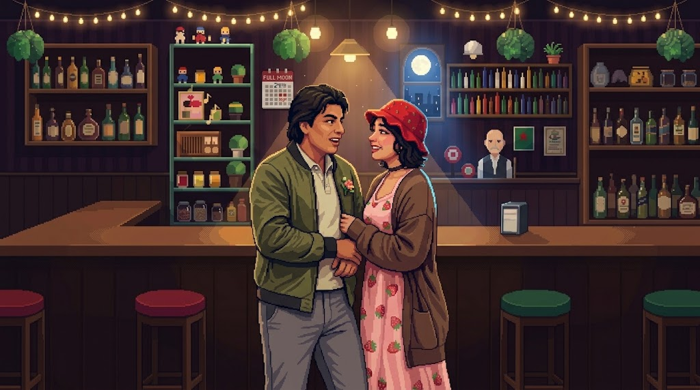

UNA PEQUEÑA HISTORIA
Para dos personas
y todos esos pequeños momentos que terminaron convirtiéndose en algo más.
UNA PEQUEÑA HISTORIA
y todos esos pequeños momentos que terminaron convirtiéndose en algo más.
Podrá nublarse el sol eternamente;
podrá secarse en un instante el mar;
podrá romperse el eje de la tierra
como un débil cristal.
¡Todo sucederá! Podrá la muerte
cubrirme con su fúnebre crespón;
pero jamás en mí podrá apagarse
la llama de tu amor.
— Gustavo Adolfo Bécquer, Rima XCI

Toca lo que brilla
📅 26 de Junio de 2026
Así estaban las estrellas esa noche, cada una en su lugar, como si supieran que algo estaba por empezar.
Nadie planeó ese cielo, pero quedó escrito para nosotros.
🎵 Sonando en la rocola
John Coltrane
Esta canción lleva nuestro nombre.
Quiero que todas nuestras noches suenen así: despacio, cálidas, contigo al lado.
Falta el archivo de audio. Guárdalo como assets/in-a-sentimental-mood.mp3.
🌙 Desde cualquier lugar
Hay noches en que la distancia pesa. Pero la luna es una sola, y esta noche nos cobija a los dos: la que tú miras es la que yo miro.
Por eso creo que ningún kilómetro puede con lo nuestro. Cada vez que ella sube, me recuerda que seguimos bajo el mismo cielo, y que este amor sabe cruzar cualquier distancia.
20 de septiembre de 2026
Mi amor,
Qué curioso es cómo alguien puede llegar poco a poco y terminar ocupando tanto espacio en el corazón. Entre conversaciones, risas, noches compartidas y pequeños momentos, te has convertido en una de mis partes favoritas de los días.
No sé qué páginas nos esperan todavía, pero sí sé que quiero seguir escribiéndolas contigo, con calma, con cariño y con la ilusión de que algún día podamos mirar atrás y sonreír por todo lo que construimos.
Siempre tuyo,
Michell
Toca el sobre para abrirlo